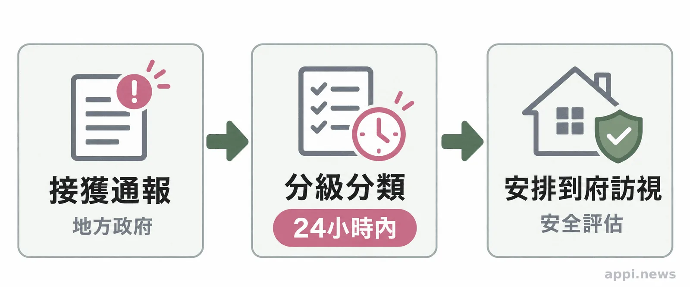
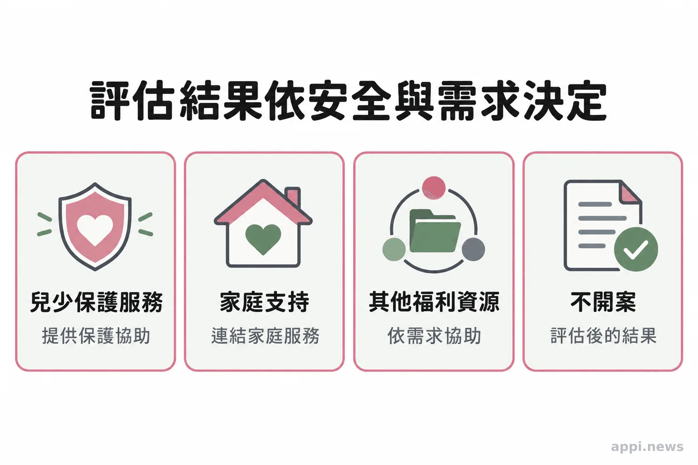

兒少保護通報前後，大人可以做的4件事
看見孩子可能需要保護時，先了解113與110的分工、地方政府評估流程、通報人保密和家庭支持資源，知道大人可以怎麼提供協助。
孩子身邊的大人，有時會先注意到照顧狀況改變，或聽見孩子透露令人擔心的事。面對疑似兒少保護情形，家長、教師和社區志工常擔心通報後會不會曝光、孩子是否立刻離家，或自己看錯了怎麼辦。兒少保護通報的功能，是讓地方主管機關接手評估；一般人不必先查明案件，也不需要自己判定責任。了解求助管道與後續安排，能讓關心轉成合宜的支持。
一、先分辨需要113諮詢，還是110即時協助
一般疑似兒少保護情形可以撥113或向地方主管機關提供資訊；若孩子正處於立即危險，請打110請求即時協助。
113保護專線全年受理諮詢與通報，也可透過衛福部列出的線上通報管道聯繫。通報時，說明孩子大約年齡、所在位置、何時發生，以及自己親眼看見或直接聽見的事。若資訊來自他人轉述，也要說明來源；尚不確定的部分可以明白表示不確定。提供已知情況即可，調查與風險判斷由主管機關負責。
孩子若需要就醫，先處理醫療需求；若現場有暴力或人身安全威脅，聯絡110。老師、親友或志工可以陪伴孩子、留意安全並把資訊交給權責單位，不宜反覆詢問、要求孩子重述細節，或直接找被懷疑者對質。這些做法可能增加孩子壓力，也可能讓現場風險升高。
二、通報後由地方政府分流，安排適合的服務
地方主管機關接獲通報後，應在24小時內分級分類，再依案件資訊與風險安排訪視、調查或其他處置。
社政單位會了解孩子的安全與照顧情形，必要時與警政、醫療、教育或司法單位合作。這是風險與服務需求的評估程序，不等同刑事定罪。若調查顯示家庭有經濟、照顧或其他支持需要，案件可能由脆弱家庭服務或社會福利中心接手；部分案件也可能連結單一福利資源。衛福部說明，保護性案件不開案但仍有福利需求時，會依需求協助連結資源，多重需求則可能轉介社福中心。

三、調查期限有差異，評估結果也不只一種
調查報告期限依分級與分類而不同；4日只適用法規列出的特定案件，不能當成每件通報的共同期限。
現行辦法要求地方政府分流後儘速指派訪視調查並提出報告。第一級第一類案件須於4日內提出報告，其他類別依附表採不同期限，例如30日或4個月。這些是調查報告時限，不代表家庭服務、法院程序或所有後續處遇都會在同一天限內完成；跨縣市聯繫、孩子是否能接觸及安全風險，也會影響實際安排。
評估後可能開案提供兒少保護服務、轉介脆弱家庭或其他資源，也可能不開案。若需要家庭處遇，社工可能和家庭討論安全計畫、照顧支持、親職教育或跨單位服務。孩子是否需要保護或安置，須以安全與最佳利益評估，並依法律程序處理。通報本身不代表孩子必然離家。
《兒童及少年福利與權益保障法》第53條規定，任何人知悉疑似兒少保護情形都可以通報地方主管機關，通報人的身分資料應予保密。

四、保護孩子，也顧及家庭成員與通報人的安全
法律要求通報人身分資料保密，但這不等於完全匿名的保證；若你或孩子可能面臨安全疑慮，通報時請一併說明。
評估後沒有開案，不表示通報人做錯，也不能單憑結果認定通報內容虛假。通報時應區分親眼所見、他人轉述和個人推測，不捏造資訊。通報人不一定會收到完整調查結果，因為孩子與家庭的個人資料仍受保護。
兒少、疑似受暴或照顧疏忽家庭中的成員，以及可能有安全疑慮的通報人，都需要被納入保護考量。請勿在社群平台張貼孩子的姓名、照片、住址、學校或足以辨識身分的描述；《兒童及少年福利與權益保障法》第69條也規範特定兒少身分資訊的公開。家長、教師和志工能做的是如實提供觀察、保存必要資訊並使用正式求助管道，不自行查案或在網路指控特定家庭。
- 一般疑似情形可聯絡113或地方主管機關，立即危險打110。
- 24小時是地方政府分級分類期限；調查報告另依案件分類適用不同時限。
- 通報後可能開案、轉介或不開案，服務與安置依孩子安全及家庭需求評估。
- 記錄自己確知的資訊，保護孩子與通報人隱私，不自行盤問或公開身分。
常見問題
把已知資訊如實告訴113或地方主管機關即可；遇到立即危險，聯絡110。
Q1：通報前需要先確認孩子受虐嗎？
不需要。疑似情形可交由地方主管機關評估，通報人照實說明所知即可。
Q2：通報後孩子會被帶離家庭嗎？
不一定。主管機關會依孩子安全、家庭情況及法律程序決定適當處置。
Q3：評估後沒有開案，代表通報錯了嗎？
不代表。可能是目前不符合兒少保護開案條件，或需要由其他福利服務承接。
Q4：通報人會知道完整調查結果嗎？
不一定。主管機關可能因孩子與家庭的隱私，無法提供完整個案資訊。
Q5：通報是完全匿名嗎？
法律要求保密通報人身分資料，但不應把法定保密說成完全匿名的保證。
若你眼前有具體疑慮，可以先記下觀察到的時間、地點與事情經過，再聯絡113；孩子正處於立即危險時打110。請勿自行追查或公開可辨識孩子身分的資訊。
參考文獻
- 衛生福利部。《兒童及少年福利與權益保障法》，第53、56、64、69條。https://www.mohw.gov.tw/dl-95290-d476e7a7-a1df-43e3-ad21-290d7b9378ce.html
- 法務部全國法規資料庫。《兒童及少年保護通報與分級分類處理及調查辦法》，第2至9、12條及調查報告期限附表。https://law.moj.gov.tw/LawClass/LawAll.aspx?pcode=D0050009
- 衛生福利部保護服務司。〈兒少保護及脆弱家庭通報案件訪視後互轉機制為何？〉https://topics.mohw.gov.tw/SS/cp-4531-50130-204.html
- 衛生福利部保護服務司。〈兒少保護〉（113保護專線、線上通報及地方家防中心資訊）。https://www.mohw.gov.tw/fp-190-233-1.html
- 衛生福利部。〈對孩子多一分關心，讓社會多一分安心〉（113通報與緊急情況撥110）。https://www.mohw.gov.tw/cp-2704-46253-1.html
本文同步刊於 appi.news。